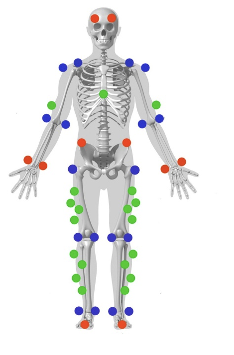
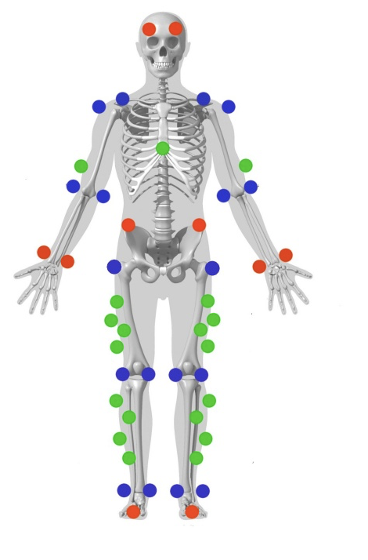

Golf Ball Distance & Upper Body Biomechanics During a Golf Swing
About
The objective of this study was to determine the effect of golf ball distance from foot stance on upper body biomechanics during a golf swing. It was hypothesized that increasing the distance beyond 6 inches would lead to:
- Decreased Range of Motion (ROM): Reduced elbow, shoulder, and trunk joint mobility.
- Reduced Angular Acceleration: Slower joint movement during the swing.
- Increased Muscle Activation: Higher Root Mean Square (RMS) and Peak EMG (PEMG) values, indicating elevated muscle effort.
This study aimed to link biomechanical variables voltage, acceleration, and ROM to potential injury risks associated with improper golf posture.
 

How?
- Used VICON Nexus and VICON Vantage Cameras for 3D motion capture, Delsys Trigno EMG sensors for muscle activation, Goniometers for joint angles, accelerometers and Force Plates for ground reaction forces.
- Kinematic Analysis: Computed Range of Motion (ROM), acceleration, velocity, force, and power of the golf swing using MATLAB, Visual3D, and VICON Nexus.
- Signal Processing: Filtered EMG data with a Butterworth filter (10-500 Hz) in MATLAB, ensuring noise free signal analysis.
- Force-Velocity Relationship: Plotted power output against muscle contraction velocity to identify fatigue prone ranges.
Results
The study confirmed that the optimal distance between the golf ball and foot stance is 6 inches, maximizing swing efficiency while minimizing injury risk. As the ball moved further away, there was a noticeable decrease in ROM and angular acceleration in the elbow, shoulder, and trunk joints. Additionally, RMS and PEMG values increased significantly, indicating higher muscle strain and potential tissue stress. MATLAB analysis of acceleration, velocity, force, and power further validated that improper stance alignment can lead to increased muscle fatigue and joint instability, highlighting the importance of correct posture for injury prevention.
Tech Stack: MATLAB, VISUAL3D, VICON NEXUS